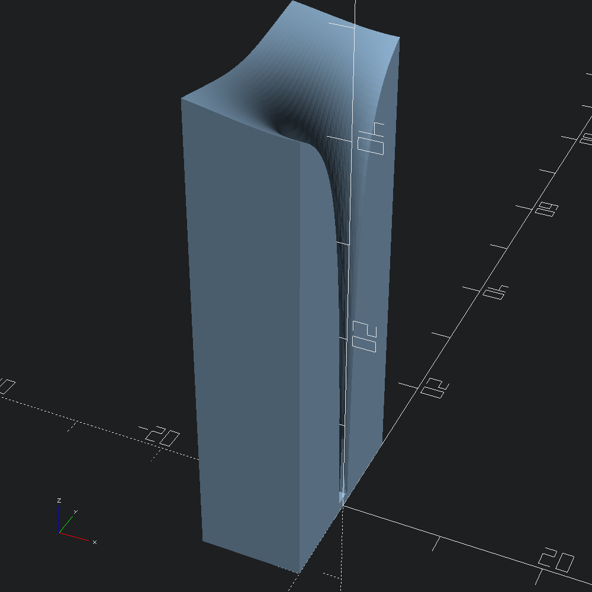

open OCADml
open OSCADmlDefine a function from x and y coordinates to z height of the xy plane.
let gravity_well ~x ~y =
let z = 50. -. (50. /. Float.sqrt ((x *. x) +. (y *. y))) in
if z < 1. then 1. else zEvaluate gravity_well, producing a mesh with the resulting height at each point of the grid defined by the xy bound and step parameters.
let mesh =
Mesh.cartesian_plot
~min_x:(-10.)
~x_steps:30
~max_x:0.
~min_y:(-10.)
~y_steps:60
~max_y:10.
gravity_wellConvert our mesh into an OpenSCAD polyhedron and output to file.
let () = Scad.to_file "cartesian_gravity_well.scad" (Scad.of_mesh mesh)